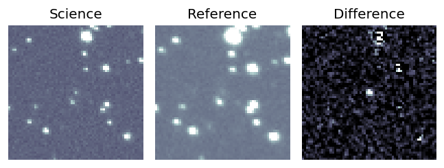
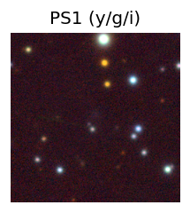
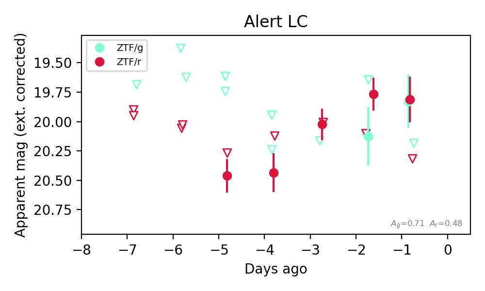
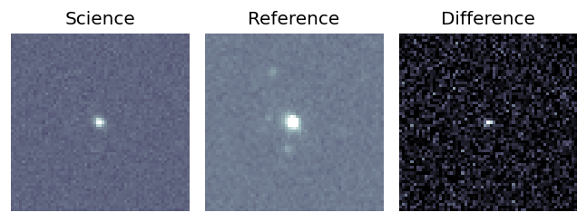
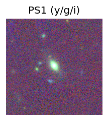
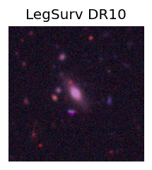
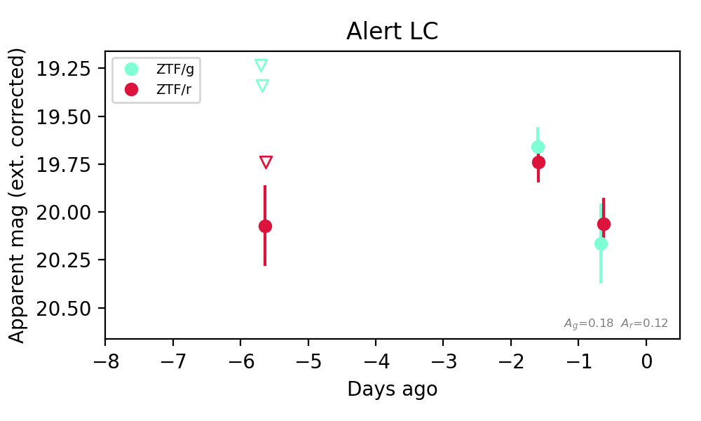

Candidate List 20260809Last night — ZTF: 5,537 passed basic cuts (678 young) · LSST: 0 passed basic cuts (0 young)Previous Day Next Day
Section 1: New Sources (age<1d) Section 2: Old (1-5d) sources observed last nightplaceholder
Section 1: New Afterglow/FBOT Cands Last Night (2)
1. [ZTF] ZTF26abmrfek (Afterglow?) [Back to Top] [Share] [Trigger Swift] [Fritz Alert] [Fritz Source] [Lasair]RA, Dec: 355.83721, 61.99717 23h43m20.93s, 61d59m49.82sGalactic (l, b): 115.03172, 0.17432 ext(g-r) = 1.551Coincident trigger: Fermi/GBM GRB260803728 (r=6.7 deg, sep 12.7 deg = 1.89 r; 4.61 d before first detection)Trigger time(s) marked on the light curve; error circles in the localization panel.


TESS: Sectors [17 18 24 57 58 77 78 84 85]
PS1: 0 sources in 3 arcsec
LegacySurvey: 0 sources in 3 arcsec


Extinction-corrected gr color:
From alerts: 0.56 +/- 0.37 mag
Consistent with synchrotron, g-r>0!
Rise Rate:
r: 0.98 mag/day
Fade Rate:
2. [ZTF] ZTF26abmubuy (Afterglow?) [Back to Top] [Share] [Trigger Swift] [Fritz Alert] [Fritz Source] [Lasair]RA, Dec: 7.46226, -0.43102 0h29m50.94s, 0d-25m-51.67sGalactic (l, b): 111.05571, -62.8039 WARNING: -3.36 deg from ecliptic plane ext(g-r) = 0.022


TESS: Sectors [42 43 70]
PS1: 0 sources in 3 arcsec
LegacySurvey: 1 sources in 3 arcsec Closest: d = 7.06 arcsec, 333.5 deg (east of north) photoz=0.95 (68% bounds 0.67, 1.18), type=REX peak abs mag (ext. corrected) = -24.28 (68% bounds -23.36, -24.88)

Extinction-corrected gr color:
From alerts: 0.1 +/- 0.22 mag
Consistent with synchrotron, g-r>0!
Rise Rate:
g: 0.06 mag/day
r: 0.54 mag/day
Fade Rate:
Section 2: Older Sources Observed Last Night (18)
0. [ZTF] ZTF26ablnnlb (Afterglow?) [Back to Top] [Share] [Trigger Swift] [Fritz Alert] [Fritz Source] [Lasair]RA, Dec: 9.71403, -16.10896 0h38m51.37s, -16d-6m-32.26sGalactic (l, b): 107.46218, -78.60103 ext(g-r) = 0.026


TESS: Sectors [ 3 30 107]
NED host (10 arcsec):Found WISEA J003851.43-160635.6 (G, 3.5″); NED spec-z: z=0.0196 [zflag SUN]; peak abs mag = -16.91
PS1: 0 sources in 3 arcsec
LegacySurvey: 0 sources in 3 arcsec

Extinction-corrected gr color:
From alerts: 0.36 +/- 99 mag
Extinction-corrected ri color:
From alerts: -0.03 +/- 0.14 mag
Consistent with synchrotron, g-r>0!
Rise Rate:
g: 0.14 mag/day
r: 0.59 mag/day
i: 1.05 mag/day
Fade Rate:
1. [ZTF] ZTF26ablpqzw (FBOT?) [Back to Top] [Share] [Trigger Swift] [Fritz Alert] [Fritz Source] [Lasair]RA, Dec: 227.72978, 13.34022 15h10m55.15s, 13d20m24.79sGalactic (l, b): 17.01262, 54.65635 ext(g-r) = 0.04


TESS: Sectors 51
SDSS (<15 kpc):Found SDSS phot-z: z=0.16; peak abs mag = -20.34
PS1: 0 sources in 3 arcsec
LegacySurvey: 1 sources in 3 arcsec Closest: d = 0.27 arcsec, 228.1 deg (east of north) photoz=0.15 (68% bounds 0.13, 0.17), type=SER peak abs mag (ext. corrected) = -20.2 (68% bounds -19.86, -20.48)

Extinction-corrected gr color:
From alerts: 0.39 +/- 0.23 mag
Extinction-corrected gi color:
From alerts: 0.27 +/- 0.23 mag
Extinction-corrected ri color:
From alerts: -0.24 +/- 0.3 mag
Consistent with synchrotron, g-r>0!
Rise Rate:
g: 0.17 mag/day
r: 0.2 mag/day
i: 0.22 mag/day
Fade Rate:
2. [ZTF] ZTF26ablrygn (Afterglow?) [Back to Top] [Share] [Trigger Swift] [Fritz Alert] [Fritz Source] [Lasair]RA, Dec: 327.96568, 41.81727 21h51m51.76s, 41d49m2.15sGalactic (l, b): 90.69655, -9.54674 ext(g-r) = 0.373


TESS: Sectors [ 15 16 56 83 121]
PS1: 0 sources in 3 arcsec
LegacySurvey: 0 sources in 3 arcsec

Extinction-corrected gr color:
From alerts: -0.07 +/- 0.12 mag
Consistent with synchrotron, g-r>0!
Rise Rate:
g: 0.72 mag/day
r: 2.02 mag/day
Fade Rate:
r: 0.19 mag/day
3. [ZTF] ZTF26ablvelv (Afterglow?) [Back to Top] [Share] [Trigger Swift] [Fritz Alert] [Fritz Source] [Lasair]RA, Dec: 218.87934, 15.98546 14h35m31.04s, 15d59m7.67sGalactic (l, b): 13.49405, 63.43523 ext(g-r) = 0.029


TESS: Sectors 50
NED host (10 arcsec):Found 2MASX J14353108+1559095 (G, 2.5″); NED spec-z: z=0.0529 [zflag SUN]; peak abs mag = -17.35
PS1: 0 sources in 3 arcsec
LegacySurvey: 1 sources in 3 arcsec Closest: d = 2.53 arcsec, 28.5 deg (east of north) photoz=0.07 (68% bounds 0.05, 0.09), type=SER peak abs mag (ext. corrected) = -17.99 (68% bounds -17.23, -18.44)

Extinction-corrected gr color:
From alerts: 0.22 +/- 0.21 mag
Consistent with synchrotron, g-r>0!
Rise Rate:
Fade Rate:
r: 0.2 mag/day
4. [ZTF] ZTF26abmabrc (FBOT?) [Back to Top] [Share] [Trigger Swift] [Fritz Alert] [Fritz Source] [Lasair]RA, Dec: 25.64318, -2.82362 1h42m34.36s, -2d-49m-25.04sGalactic (l, b): 151.83473, -62.78994 ext(g-r) = 0.024


TESS: Sectors [ 3 30 70 97 108]
PS1: 0 sources in 3 arcsec
LegacySurvey: 1 sources in 3 arcsec Closest: d = 0.28 arcsec, 163.5 deg (east of north) photoz=0.39 (68% bounds 0.15, 0.94), type=EXP peak abs mag (ext. corrected) = -23.56 (68% bounds -21.29, -25.89)

Extinction-corrected gr color:
From alerts: -0.32 +/- 0.11 mag
Extinction-corrected gi color:
From alerts: -0.6 +/- 0.21 mag
Extinction-corrected ri color:
From alerts: -0.42 +/- 0.2 mag
Rise Rate:
g: 0.24 mag/day
r: 0.16 mag/day
i: 0.1 mag/day
Fade Rate:
5. [ZTF] ZTF26abmiytv (FBOT?) [Back to Top] [Share] [Trigger Swift] [Fritz Alert] [Fritz Source] [Lasair]RA, Dec: 335.61247, -2.88677 22h22m26.99s, -2d-53m-12.38sGalactic (l, b): 60.65678, -46.93049 ext(g-r) = 0.071


TESS: Sectors [42 55 92]
SDSS (<15 kpc):Found SDSS phot-z: z=0.02; peak abs mag = -15.73
PS1: 0 sources in 3 arcsec
LegacySurvey: 1 sources in 3 arcsec Closest: d = 2.47 arcsec, 251.2 deg (east of north) photoz=0.17 (68% bounds 0.14, 0.22), type=SER peak abs mag (ext. corrected) = -20.34 (68% bounds -19.89, -20.92)

Extinction-corrected gr color:
From alerts: -0.03 +/- 0.19 mag
Extinction-corrected gi color:
From alerts: -0.32 +/- 0.18 mag
Extinction-corrected ri color:
From alerts: -0.29 +/- 0.16 mag
Consistent with synchrotron, g-r>0!
Rise Rate:
g: 0.38 mag/day
r: 0.37 mag/day
i: 0.35 mag/day
Fade Rate:
6. [ZTF] ZTF26abmjjnm (Afterglow?FBOT?) [Back to Top] [Share] [Trigger Swift] [Fritz Alert] [Fritz Source] [Lasair]RA, Dec: 12.3065, 35.56105 0h49m13.56s, 35d33m39.77sGalactic (l, b): 122.42566, -27.30853 ext(g-r) = 0.058Coincident trigger: Einstein Probe 01709277716 (r=3.1', sep 2.1' = 0.69 r; 0.50 d before first detection)Trigger time(s) marked on the light curve; error circles in the localization panel.


TESS: Sectors [57 84]
SDSS (<15 kpc):Found SDSS phot-z: z=0.10; peak abs mag = -19.97
PS1: 1 source in 3 arcsec Closest: d = 0.09 arcsec photoz=0.09+/-0.02 peak abs mag = -19.71
LegacySurvey: 0 sources in 3 arcsec


Extinction-corrected gr color:
From alerts: -0.16 +/- 0.12 mag
Rise Rate:
g: 0.31 mag/day
r: 0.27 mag/day
Fade Rate:
7. [ZTF] ZTF26abmktcy (FBOT?) [Back to Top] [Share] [Trigger Swift] [Fritz Alert] [Fritz Source] [Lasair]RA, Dec: 240.32627, 22.54312 16h 1m18.31s, 22d32m35.23sGalactic (l, b): 37.6778, 46.92755 ext(g-r) = 0.06


TESS: Sectors [ 24 25 51 78 117]
SDSS (<15 kpc):Found SDSS phot-z: z=0.20; peak abs mag = -20.70
PS1: 0 sources in 3 arcsec
LegacySurvey: 1 sources in 3 arcsec Closest: d = 3.10 arcsec, 79.2 deg (east of north) photoz=0.09 (68% bounds 0.06, 0.12), type=EXP peak abs mag (ext. corrected) = -18.89 (68% bounds -17.74, -19.55)

Extinction-corrected gr color:
From alerts: -0.13 +/- 0.19 mag
Consistent with synchrotron, g-r>0!
Rise Rate:
g: 0.35 mag/day
r: 0.27 mag/day
Fade Rate:
8. [ZTF] ZTF26abmlafy (Afterglow?FBOT?) [Back to Top] [Share] [Trigger Swift] [Fritz Alert] [Fritz Source] [Lasair]RA, Dec: 265.52488, 65.65544 17h42m5.97s, 65d39m19.59sGalactic (l, b): 95.39901, 31.65138 ext(g-r) = 0.054


TESS: Sectors [ 14 15 16 18 19 21 22 23 24 25 26 40 41 48 49 51 52 53
55 57 59 60 73 74 75 76 77 78 79 80 81 82 84 85 117 118
119 120 121]
SDSS (<15 kpc):Found SDSS phot-z: z=0.15; peak abs mag = -19.52
NED host (10 arcsec):Found DESI J265.5243+65.6573 (G, 6.8″); NED spec-z: z=1.1467 [zflag SLS]; peak abs mag = -24.67
DESI (10 arcsec):Found DESI spec-z: z=1.15; peak abs mag = -24.67
PS1: 0 sources in 3 arcsec
LegacySurvey: 1 sources in 3 arcsec Closest: d = 0.52 arcsec, 31.0 deg (east of north) photoz=0.11 (68% bounds 0.08, 0.14), type=EXP peak abs mag (ext. corrected) = -18.76 (68% bounds -17.89, -19.29)


Extinction-corrected gr color:
From alerts: -0.16 +/- 0.17 mag
Consistent with synchrotron, g-r>0!
Rise Rate:
g: 24.89 mag/day
r: 0.28 mag/day
Fade Rate:
r: 23.79 mag/day
9. [ZTF] ZTF26abmlaln (FBOT?) [Back to Top] [Share] [Trigger Swift] [Fritz Alert] [Fritz Source] [Lasair]RA, Dec: 264.34507, 44.65409 17h37m22.82s, 44d39m14.71sGalactic (l, b): 70.69336, 31.43391 ext(g-r) = 0.024


TESS: Sectors [ 25 26 40 52 53 78 79 80 117 118]
SDSS (<15 kpc):Found SDSS phot-z: z=0.16; peak abs mag = -19.64
PS1: 0 sources in 3 arcsec
LegacySurvey: 1 sources in 3 arcsec Closest: d = 0.42 arcsec, 8.5 deg (east of north) photoz=0.09 (68% bounds 0.05, 0.13), type=EXP peak abs mag (ext. corrected) = -18.42 (68% bounds -16.99, -19.11)

Extinction-corrected gr color:
From alerts: -0.38 +/- 0.23 mag
Rise Rate:
g: 0.23 mag/day
r: 0.17 mag/day
Fade Rate:
10. [ZTF] ZTF26abmlezv (FBOT?) [Back to Top] [Share] [Trigger Swift] [Fritz Alert] [Fritz Source] [Lasair]RA, Dec: 286.58211, 32.93215 19h 6m19.71s, 32d55m55.74sGalactic (l, b): 64.20452, 11.50157 ext(g-r) = 0.101


TESS: Sectors [ 14 40 41 53 54 74 80 81 119]
PS1: 1 source in 3 arcsec Closest: d = 0.84 arcsec photoz=0.30+/-0.06 peak abs mag = -21.38
LegacySurvey: 0 sources in 3 arcsec

Extinction-corrected gr color:
From alerts: -0.34 +/- 0.24 mag
Rise Rate:
g: 0.26 mag/day
r: 0.19 mag/day
Fade Rate:
11. [ZTF] ZTF26abmmbaq (Afterglow?) [Back to Top] [Share] [Trigger Swift] [Fritz Alert] [Fritz Source] [Lasair]RA, Dec: 295.57893, 44.16031 19h42m18.94s, 44d 9m37.11sGalactic (l, b): 77.61341, 10.20045 ext(g-r) = 0.227


TESS: Sectors [ 14 15 40 54 55 74 75 81 82 119 120]
PS1: 1 source in 3 arcsec Closest: d = 4.95 arcsec photoz=0.14+/-0.07 peak abs mag = -19.39
LegacySurvey: 0 sources in 3 arcsec

Extinction-corrected gr color:
From alerts: 0.02 +/- 0.3 mag
Consistent with synchrotron, g-r>0!
Rise Rate:
r: 1.93 mag/day
Fade Rate:
r: 10.88 mag/day
12. [ZTF] ZTF26abmnqnf (Afterglow?) [Back to Top] [Share] [Trigger Swift] [Fritz Alert] [Fritz Source] [Lasair]RA, Dec: 302.93124, 46.45529 20h11m43.50s, 46d27m19.06sGalactic (l, b): 82.25487, 6.89726 ext(g-r) = 0.721


TESS: Sectors [ 14 15 41 55 56 75 76 81 82 83 120 121]
PS1: 1 source in 3 arcsec Closest: d = 5.09 arcsec photoz=0.57+/-0.53 peak abs mag = -25.05
LegacySurvey: 0 sources in 3 arcsec

Extinction-corrected gr color:
From alerts: 0.65 +/- 99 mag
Rise Rate:
r: 0.76 mag/day
Fade Rate:
r: 1.11 mag/day
13. [ZTF] ZTF26abmnsef (FBOT?) [Back to Top] [Share] [Trigger Swift] [Fritz Alert] [Fritz Source] [Lasair]RA, Dec: 346.27269, 60.76827 23h 5m5.45s, 60d46m5.78sGalactic (l, b): 110.30695, 0.53019 ext(g-r) = 2.052


TESS: Sectors [24 57 58 77 78 84 85]
SDSS (<15 kpc):Found SDSS phot-z: z=0.31; peak abs mag = -25.37
PS1: 1 source in 3 arcsec Closest: d = 5.43 arcsec photoz=0.04+/-0.84 peak abs mag = -20.37
LegacySurvey: 0 sources in 3 arcsec

Extinction-corrected gr color:
From alerts: -3.09 +/- 99 mag
Rise Rate:
r: 1.57 mag/day
Fade Rate:
14. [ZTF] ZTF26abmolow (FBOT?) [Back to Top] [Share] [Trigger Swift] [Fritz Alert] [Fritz Source] [Lasair]RA, Dec: 283.81166, 15.14163 18h55m14.80s, 15d 8m29.86sGalactic (l, b): 46.88417, 6.01734 ext(g-r) = 0.789


TESS: Sectors [ 53 54 80 119]
PS1: 1 source in 3 arcsec Closest: d = 4.46 arcsec photoz=0.33+/-0.05 peak abs mag = -23.01
LegacySurvey: 0 sources in 3 arcsec

Extinction-corrected gi color:
From alerts: 0.11 +/- 99 mag
Extinction-corrected ri color:
From alerts: -0.67 +/- 99 mag
Rise Rate:
i: 1.34 mag/day
Fade Rate:
15. [ZTF] ZTF26abmpeys (Afterglow?) [Back to Top] [Share] [Trigger Swift] [Fritz Alert] [Fritz Source] [Lasair]RA, Dec: 343.2053, 40.75603 22h52m49.27s, 40d45m21.72sGalactic (l, b): 99.89116, -16.74912 ext(g-r) = 0.149


TESS: Sectors [16 56 57 84]
PS1: 1 source in 3 arcsec Closest: d = 0.44 arcsec photoz=0.14+/-0.02 peak abs mag = -19.09
LegacySurvey: 0 sources in 3 arcsec

Extinction-corrected gr color:
From alerts: -0.21 +/- 0.25 mag
Consistent with synchrotron, g-r>0!
Rise Rate:
r: 0.68 mag/day
Fade Rate:
16. [ZTF] ZTF26abmqegx (Afterglow?) [Back to Top] [Share] [Trigger Swift] [Fritz Alert] [Fritz Source] [Lasair]RA, Dec: 329.26016, -18.54481 21h57m2.44s, -18d-32m-41.32sGalactic (l, b): 35.56006, -49.1189 ext(g-r) = 0.039


TESS: Sectors [ 92 116]
PS1: 0 sources in 3 arcsec
LegacySurvey: 0 sources in 3 arcsec

Extinction-corrected gr color:
From alerts: 0.85 +/- 99 mag
Extinction-corrected gi color:
From alerts: -0.14 +/- 99 mag
Rise Rate:
g: 0.43 mag/day
r: 1.42 mag/day
Fade Rate:
g: 0.38 mag/day
r: 1.83 mag/day
17. [ZTF] ZTF26abmqmui (Afterglow?) [Back to Top] [Share] [Trigger Swift] [Fritz Alert] [Fritz Source] [Lasair]RA, Dec: 19.79727, 29.98665 1h19m11.35s, 29d59m11.94sGalactic (l, b): 130.05789, -32.50083 ext(g-r) = 0.059


TESS: Sectors [17 57 84]
SDSS (<15 kpc):Found SDSS phot-z: z=0.12; peak abs mag = -19.23
PS1: 0 sources in 3 arcsec
LegacySurvey: 1 sources in 3 arcsec Closest: d = 0.41 arcsec, 56.7 deg (east of north) photoz=0.12 (68% bounds 0.12, 0.13), type=SER peak abs mag (ext. corrected) = -19.17 (68% bounds -19.06, -19.31)

Extinction-corrected gr color:
From alerts: 0.1 +/- 0.25 mag
Consistent with synchrotron, g-r>0!
Rise Rate:
r: 0.01 mag/day
Fade Rate:
g: 0.54 mag/day